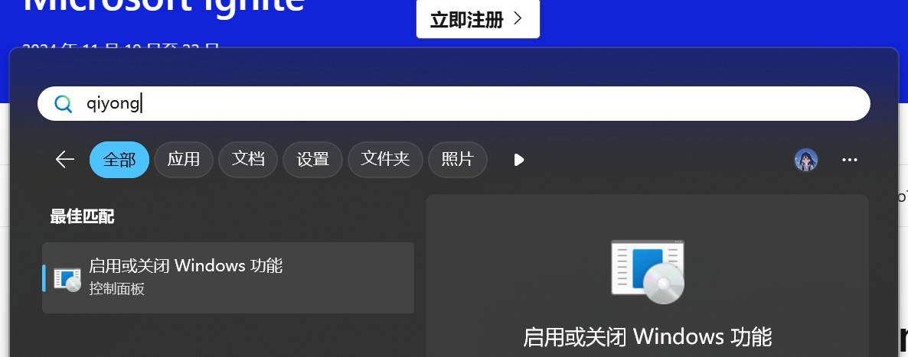
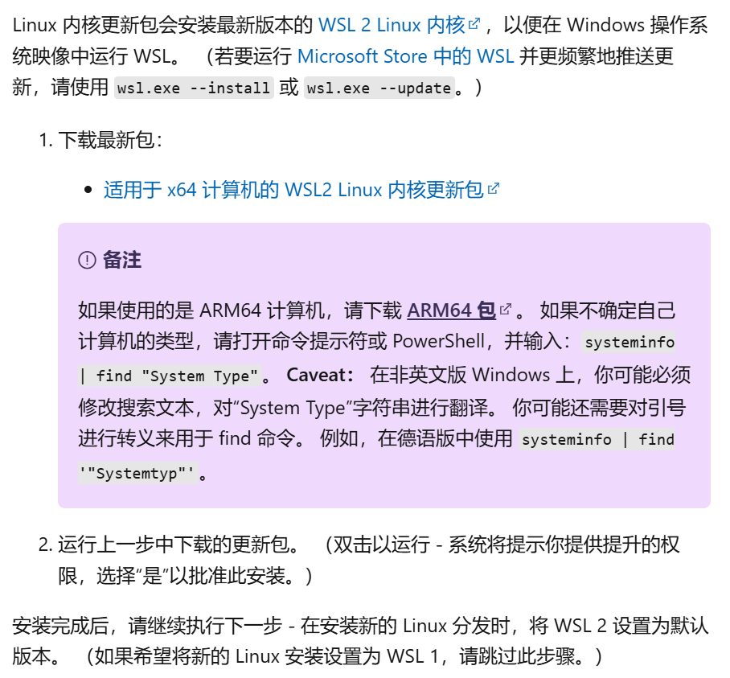
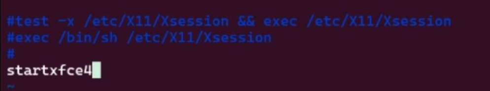
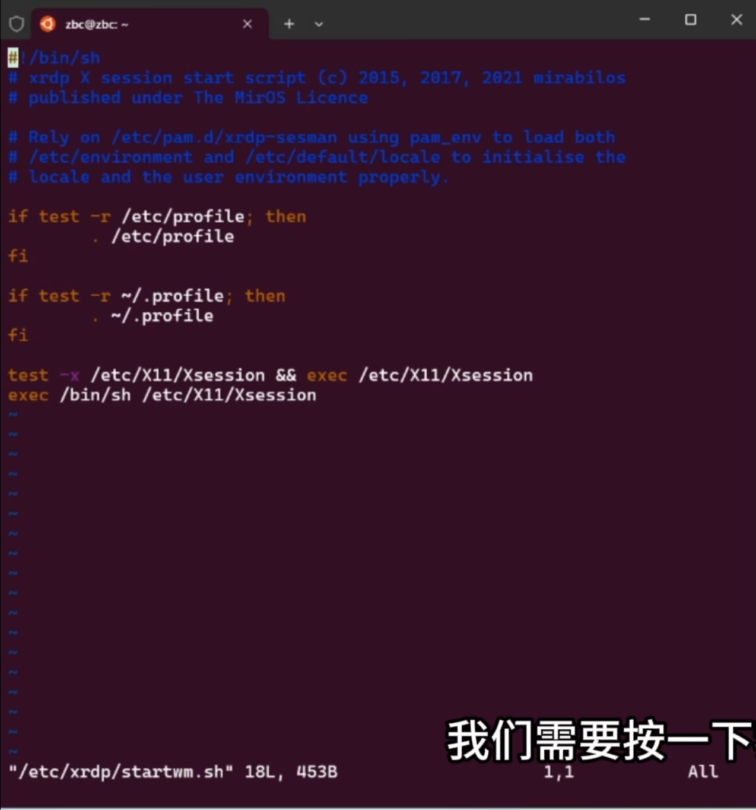
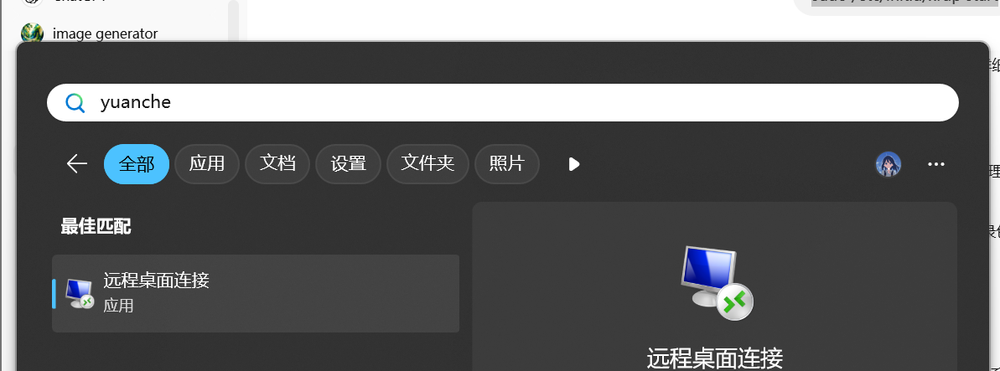
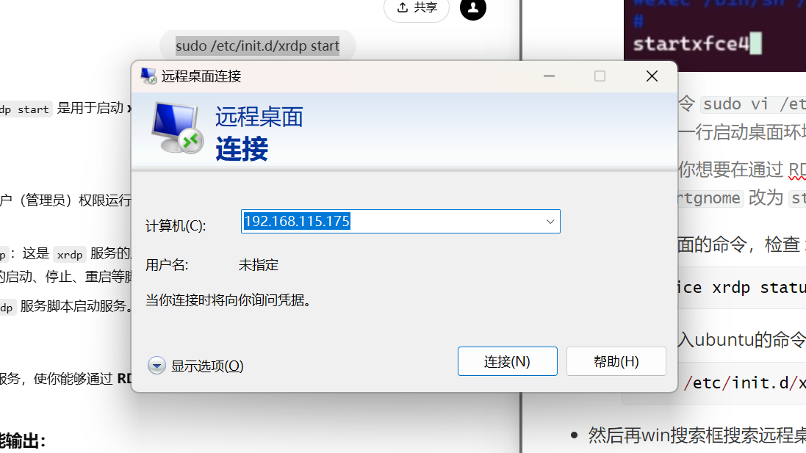
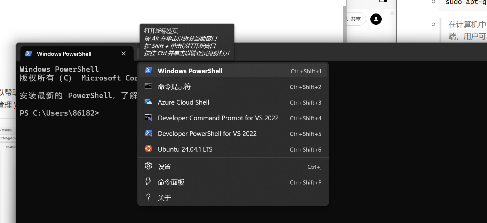

本人能力有限，因为能找的linux安装教程和文档中，只有WSL的时效性和易操作性最好，所以选择了WSL安装linux，下面是基本的安装操作。
什么是WSL
（windows subsystem For LInux，适用于Linux的windows子系统）
适用于 Linux 的 Windows 子系统 (WSL) 是 Windows 的一项功能，可用于在 Windows 计算机上运行 Linux 环境，而无需单独的虚拟机或双引导。
可以实现如下很多功能
- 使用 WSL 安装和运行各种 Linux 发行版
- 将文件存储在独立的 Linux 文件系统中
- 运行命令行工具，例如 BASH。等等。
现在的大多都是WSL2，WSL 2 使用虚拟化技术在轻量级实用工具虚拟机 (VM) 中运行 Linux 内核,更加具体的可以参考官方的[网站](什么是适用于 Linux 的 Windows 子系统 | Microsoft Learn)
WSL(Win11)的安装
首先点击Win键搜索启用和关闭Windows功能，然后勾选下面俩个选项
- 适用于Linux的Windows子系统
- 虚拟机平台
然后点击确定重启。
- 打开终端（建议都以管理员身份打开吧），基本的WSL命令可以参考[网址](WSL 的基本命令 | Microsoft Learn)
因为中间安装Linux的过程中遇到了一个报错，建议提前操作一下。
Installing, this may take a few minutes...
WslRegisterDistribution failed with error: 0x800701bc
Error: 0x800701bc WSL 2 ?????????????????? https://aka.ms/wsl2kernel
Press any key to continue...
我的解决方法就是登录报错的提示网址下载了WSL2的Linux内核更新包，弄到最新的的
执行
wsl.exe --install
//然后设置WSL为默认版本
wsl --set-default-version 2
具体遇到的报错都可以到上面链接的官网查找到办法。
- 查看现有的微软商店的现有Linux版本
wsl --list --online 或 wsl -l -o
然后查看需要的版本，安装
wsl --install -d <对应的版本名称（尖括号不需要）>
实际我安装后弹出的确实是这个
Welcome to Ubuntu 24.04.1 LTS (GNU/Linux 5.10.16.3-microsoft-standard-WSL2 x86_64)
* Documentation: https://help.ubuntu.com
* Management: https://landscape.canonical.com
* Support: https://ubuntu.com/pro
System information as of Wed Nov 20 21:13:53 CST 2024
System load: 0.0 Processes: 9
Usage of /: 0.5% of 250.98GB Users logged in: 0
Memory usage: 2% IPv4 address for eth0: 192.168.91.100
Swap usage: 0%
This message is shown once a day. To disable it please create the
/root/.hushlogin file.
root@Ayang:~#
这些是系统的实时状态信息：
- System load: 0.0 表示当前系统没有负载。
- Processes: 当前运行的进程数量为 9。
- Usage of /: 根目录
/的磁盘空间使用率是 0.5%，总容量为 250.98GB（与 Windows 共用硬盘空间）。 - Users logged in: 没有用户登录（目前你是
root用户）。 - Memory usage: 内存使用率为 2%，表示系统资源消耗很低。
- IPv4 address for eth0:
192.168.91.100是 WSL 中分配的 IP 地址。 - Swap usage: 没有使用交换空间（虚拟内存）。
当时根据视频教程应该会弹出创建用户的，但是默认我的windows账户为root最高权限账户，但我也不知道密码，因为不创建号的话后面确实任然会出现问题，建议按照下面的步骤，创建用户。
使用
adduser命令来创建新用户。sudo adduser new_username（自己希望创建的用户名字）系统会提示你输入新用户的密码，并要求你输入其他信息，注意密码输入的时候就是看不到的。
给新用户设置 sudo 权限（给你创建的用户super to do 的管理员权限）
sudo usermod -aG sudo new_username（用户名）创建并配置完新用户后，你可以切换到该用户进行操作
su - new_username使用以下命令检查新用户是否创建成功，如果一切正常，该命令将显示新用户的 UID、GID 和所属组等信息
id new_username可以使用以下命令删除用户及其主目录
sudo deluser --remove-home new_username
然后会弹出Ubuntu（我安装的版本）窗口执行下面的操作
用于更新软件包管理系统中的包索引。
sudo apt-get update
下一步回到终端，输入
wsl -l -v //检查当前的WSL版本 wsl --update //检查当前的WSL是否处于最新的版然后分别输入下面俩行
dism.exe /online /enable-feature /featurename:Microsoft-Windows-Subsystem-Linux /all /norestart dism.exe /online /enable-feature /featurename:VirtualMachinePlatform /all /norestart第一行启用 Windows Subsystem for Linux (WSL) 功能，让 Windows 系统支持运行 Linux 的用户空间工具和环境。
第二行启用 Virtual Machine Platform 功能，提供虚拟化环境支持。这是 WSL 2 的必备组件，因为 WSL 2 基于轻量级虚拟机运行。
然后回到ubuntu的命令行窗口
输入，下面这行可以看到相关的信息。
lsb_release -a然后输入下面命令，检查软件包索引
sudo apt update && sudo apt -y upgrade //sudo apt update此命令不会安装或升级任何软件，只是确保系统知道最新的软件版本信息。 //sudo apt -y upgrade系统会根据之前 apt update 获取的最新软件包索引，检查哪些软件包可以升级，然后下载并安装更新。 //-y：自动回答 "yes"，无需手动确认升级过程。省去提示确认的步骤。 //&& 是一个逻辑运算符，表示前一个命令成功执行后才会继续执行后一个命令。为什么需要使用
sudo普通用户权限有限：
- 普通用户不能修改系统级别的设置或文件（如安装/升级软件、修改网络配置、管理硬件设备等）。
- 这是为了保护系统安全，防止意外或恶意更改关键配置。
超级用户权限：
- 超级用户（root 用户）拥有对系统的完全控制权限，可以执行任何操作。
- 但直接以 root 身份操作存在高风险，可能因为误操作导致系统崩溃。
sudo的作用：sudo允许普通用户临时以超级用户身份运行特定命令。- 它在提供灵活性和安全性之间取得了平衡，不需要用户直接登录为 root
需要使用
sudo的场景：- 安装或卸载软件包（如
sudo apt install）。 - 修改系统配置文件（如编辑
/etc/hosts）。 - 重启或关机（如
sudo reboot）。 - 管理硬件设备（如挂载磁盘或格式化分区）。
更新完毕后，继续在linux界面输入下面命令行，Linux 系统（如 Ubuntu）中安装 xrdp 软件包,中间yes即可。
sudo apt install xrdp什么是 xrdp？
xrdp 是一个开源的远程桌面协议（RDP）服务器，用于在 Linux 系统上启用远程桌面功能。
远程桌面协议（RDP):
可以理解为一种“远程控制技术”。它允许你在一台设备上，通过网络操控另一台设备的桌面，就像在自己的电脑前一样操作它。
apt是什么？apt是 Advanced Package Tool 的缩写，翻译过来就是“高级软件包工具”。apt是一个工具，帮你从这些仓库里下载、安装、更新或卸载软件。apt的工作原理- 软件源（仓库）：
- 软件包都放在一个或多个网络仓库里。
- 这些仓库的地址保存在系统的配置文件中（通常在
/etc/apt/sources.list）。
- 索引更新：
- 每次运行
sudo apt update，apt会从仓库获取最新的软件列表。
- 每次运行
- 安装软件：
- 如果运行
sudo apt install，apt会从索引中查找软件位置，下载并自动安装。 - 安装时还会帮你解决依赖关系（如果某软件需要其他工具，它会自动安装这些工具）。
- 如果运行
- 软件源（仓库）：
然后安装XFCE4桌面环境
sudo apt install -y xfce4桌面环境（Desktop Environment，DE）：
- 桌面环境就是你平时看到的电脑桌面，它让电脑操作起来更直观。
- 比如在 Windows 系统上，你看到的“开始菜单”、“任务栏”、“桌面图标”就是它的桌面环境。
Linux 有很多种桌面环境，用户可以根据自己的需求选择不同的风格和功能。
- GNOME：功能多，界面现代化，适合配置较高的电脑。
- KDE：界面漂亮，功能丰富，类似 Windows。
- XFCE：轻量级，界面简洁，占用资源少，适合旧电脑或服务器。
如果你安装了
xrdp（远程桌面协议服务器），可以通过 RDP 连接到这个桌面环境。
尝试在 Linux 系统中安装一个叫 calc (命令行的计算器工具)的软件包。
sudo apt install calc主要功能：
基本的加减乘除。
科学计算（支持函数如 sin、cos、sqrt 等）。
支持变量和自定义表达式。
提供交互式命令行界面，适合持续计算任务。
然后输入exit退出后重新进入，输入下面，安装xfce4的额外功能安装包，安装
xfce4-goodies后，用户可以在 XFCE 桌面环境中使用更多的功能和定制选项，从而提高工作效率和桌面体验。sudo apt install -y xfce4-goodies
然后通过下面的命令行使用linux的vi编辑器，修改xrdp的配置文件，启用xfce4的桌面环境
sudo vi /etc/xrdp/startwm.sh这样我们就打开了这个配置文件，按下i键进入插入模式，将text和exec前面插入一个#号，然后再下一行输入startxfce4，然后按esc，然后在最后输入
：wq（注意带上冒号，是保存的意思），按一下enter即可。在命令
sudo vi /etc/xrdp/startwm.sh中，打开的startwm.sh文件通常会包含一行启动桌面环境的命令，类似以下内容：如果你想要在通过 RDP 连接时使用 XFCE 桌面环境，而不是 GNOME，你需要将
startgnome改为startxfce4，像这样：
然后执行下面的命令，检查 xrdp 服务的当前状态。
service xrdp status
然后重新进入ubuntu的命令行界面输入，启用xrdp服务
sudo /etc/init.d/xrdp start
然后再win搜索框搜索远程桌面连接
- 
- 
需要输入ip，在ubuntu命令行界面输入,即可查看
ip a的安装/image-20241122212553101.png)
然后输入连接
最后输入自己创建的用户和密码（之前让你创建的那个新的）然后进入了界面
然后回到ubuntu之前的命令行界面，执行该命令后，系统会从配置的软件源中下载并安装 xfce4-terminal。安装完成后，你可以使用 XFCE 终端，它是 XFCE 桌面环境下的默认终端模拟器，用来执行命令、运行脚本、查看系统输出等。
sudo apt-get install xfce4-terminal在计算机中，终端（Terminal）是一个用于与操作系统交互的文本界面。通过终端，用户可以直接输入命令、执行程序、查看输出、管理文件系统等。
终端本质上是一个界面，它将用户的输入（命令）传递给操作系统，并显示系统返回的输出。传统上，终端是一个物理设备，但在现代计算机中，终端通常是一个软件程序（例如命令行界面）。终端可以模拟与计算机进行交互的方式，通常通过键盘输入文本，输出以文本形式显示。
常见终端命令示例：
- **
ls**：列出当前目录下的文件。 - **
cd**：改变当前工作目录。
终端仿真器：
- 终端仿真器（如 GNOME Terminal、XFCE Terminal、Konsole、Windows Terminal）是一个软件程序，它提供了一个图形化界面，让用户可以像在物理终端上一样输入和执行命令。
终端仿真器示例：
- GNOME Terminal：适用于 GNOME 桌面环境的终端仿真器。
- XFCE Terminal：适用于 XFCE 桌面环境的终端仿真器。
- Konsole：适用于 KDE 桌面环境的终端仿真器。
- Windows Terminal：适用于 Windows 的终端仿真器，支持 PowerShell、CMD、WSL 等。
- **
最后当你需要启用linux时候，先点开powerShell，点击ubuntu表示启用，然后远程连接即可。
